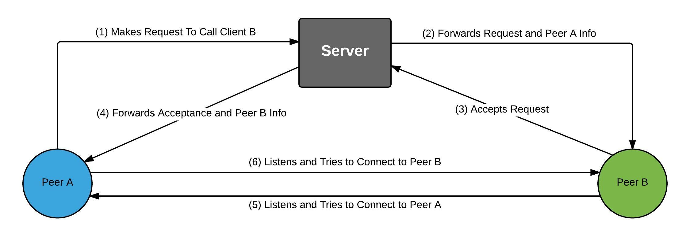

VoIP & Instant Messenger
This is a personal project that started from a general interest in developing an instant messaging system when I first started programming.
Prov. Reconstruction
This tool aims to reconstruct data provenance records through semantic analysis of documents. It focuses on news article provenance links and provenance links between files in git repositories.
ChangeTrac
ChangeTrac is a research tool developed to capture changes made to Microsoft Excel spreadsheets.
TraceIt
TraceIt is an android game that challenges users to trace shapes in a short time window.
Book Store
This website was part of my web programming class project. It is a fully functional, built from the ground up, book store web site.
8 Puzzle Solver
This was a class project for my Intro to A.I. class. I implemented various heuristics for solving an 8 puzzle, in order to compare the efficiencies/deficiencies.
VoIP & Instant Messenger Java JavaFX CSS
This roots of this project come from when I initially started programming. I was interested in learning about networking, and using client/server architectures, so I started developing a simple chat application in C#. Over time, this project evolved. It was transitioned to Java in order to have a wider support of systems, the backend components were restructured to be more robust and adhere to software practices learned in school, and the GUI was redesigned using a newer library called JavaFX.
In addition to the restructuring, I implemented peer to peer (P2P) calling using a technique called UDP hole-punching or NAT punchthrough. This technique allows two clients to connect to each other without the need to set up port forwarding. Two clients connect to a centralized server, where they expose their external ip and ports. The server relays this information to the clients wanting to connect to each other, and each individual client is able to connect using the ip/port of the opposing client that was provided by the server. This part of the project gave me a deeper understanding of networking, and exposed me to implementation details of various technologies used to create P2P connections.
I was also responsible for creating the database for this project, which primarily contains information about users. I added basic encryption to both the P2P calling and instant messaging using AES encryption.
Data Provenance Reconstruction (2015) Java JavaFX
This tool aims to reconstruct data provenance records through semantic analysis of documents. It focuses on news article provenance links and provenance links between files in git repositories. We assume this information has been lost, and attempt to recover provenance records as precisely as possible.
This project was based off of a challenge from the provenance research community.
My part was a continuation of work done by graduate students. I improved the reconstruction process by improving the foundational code, and implementing semantic analysis techniques such as cosine similarity.
Developed a GUI and two automation tools to collect datasets to test the reconstruction process.
Book Store (2015) GitHub Java / JSP CSS JavaScript HTML
Sales Stats
Inventory Control
Customer Orders
Landing Page
Cart Page

User Account
Product Page
This website was part of my web programming class project. We were tasked with developing a website to sell books, and restricted to using a java backend (hosted by a tomcat server), JavaScript, HTML, and CSS. This was my first venture into web development, and exposed me to a web client/server architecture.
I implemented the backend using Java and JSP, including database implementation. The database was used for storing customer and book records. I was responsible for the front end UI design for all of the pages on the website. I created and tied in the following pages to the backend logic: pages for products, browsing, creating reviews, admin control, user shopping carts, and customer user account controls. This project was completed over the course of a few weeks, so some functionality was limited due to time constraints.
Due to restrictions of the project, no frameworks were used.
TraceIt (2014) Java
TraceIt is an android game that challenges users to trace shapes in a short time window. This was a game developed for my modern software development class. In this class, we had the opportunity to create software from ideas pitched from students. This gave me an opportunity to work in a highly collaborative environment, as well as work with mobile development for the first time.
I was responsible for the polygon creation and randomization process. I also helped collaborate on various issues and design decisions.
8 Puzzle Solver (2014) GitHub C#
This project was designed to compare various heuristics for solving an 8 puzzle.
Heuristic implementation included:
- Manhattan Distance
- Misplaced Tiles
- Breadth First Search
It also implements state checking, which allows the program to not go down a path that has already been expanded.
ChangeTrac (2013-2014) C#
ChangeTrac is a research tool developed to capture changes made to Microsoft Excel spreadsheets. This tool is a Microsoft Excel Add-in. It allows the user to record sessions in which they are actively changing data. During these recording sessions, a user can make notes on what they are changing. After a user finishes recording, they can view a log showing what exactly changed. This tool can also roll back these changes, and display the information in a visual format, making it easy to break down all the changes made during a recorded session.
I was responsible for adding additional features, collecting user feedback, and revising the tool based on the feedback received. I also implemented a multi-cell tracking technique that allowed tracking changes over multiple cells at the same time, and was responsible for refactoring the entire code base.